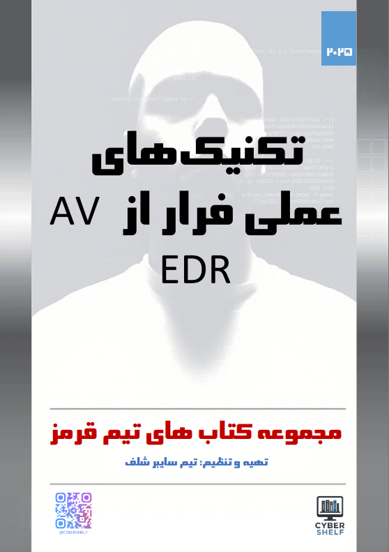

Red Team و امنیت ویندوز
تکنیکهای عملی فرار از AV/EDR
مشخصات، مخاطبان، محتوای آموزشی و سرفصلها را پیش از انتخاب بررسی کنید.

تیم سایبر شلف
تیم سایبر شلف
1404
1
336
وزیری
برنامهنویسان و علاقهمندان به عملیات تیم قرمز از مبتدی تا حرفهای
فارسی
معرفی و مطالعه کتاب
در سالهای اخیر، راهکارهای دفاعی مانند آنتیویروسهای نسل جدید (AV) و سامانههای شناسایی و پاسخ به تهدید در سطح میزبان (EDR) به بخش جداییناپذیر زیرساختهای امنیتی سازمانها تبدیل شدهاند. این فناوریها با تکیه بر تحلیلهای رفتاری، شناسایی مبتنی بر امضا، روشهای اکتشافی و حتی الگوریتمهای یادگیری ماشین، توانستهاند سطح شناسایی تهدیدات را بهطور چشمگیری افزایش دهند. اما در مقابل، مهاجمان و پژوهشگران امنیتی نیز همواره در تلاشاند با بهکارگیری روشهای خلاقانه و پیچیده، این سامانهها را دور بزنند.
کتاب حاضر با عنوان «تکنیکهای عملی فرار از AV/EDR» بهطور تخصصی و عمیق به بررسی همین موضوع میپردازد. هدف اصلی این اثر، آموزش روشهای امنیت تهاجمی پیشرفته است که در سناریوهای واقعی برای فرار از شناسایی توسط ابزارهای مدرن دفاعی به کار میروند. محتوای کتاب کاملاً عملی، آزمایشمحور و کاربردی بوده و بدون پرداختن به مباحث غیرضروری، شما را مستقیماً با تکنیکها و ابزارهایی آشنا میسازد که در عملیات تیم قرمز، توسعه بدافزار و تست نفوذ پیشرفته مورد استفاده قرار میگیرند.
در طول مطالعه، با مفاهیم کلیدی همچون مکانیزمهای شناسایی AV/EDR، مبانی داخلی ویندوز و دور زدن syscalls، پیادهسازیهای سفارشی NTDLL، تزریق شلکد و فرآیند، رمزگذاری و کاهش آنتروپی، تکنیکهای ضدتحلیل، و حتی فرار در سطح کرنل آشنا خواهید شد. همچنین، آزمایشگاههای عملی طراحی شدهاند تا شما بتوانید این مفاهیم را بهصورت عملی با payloadهای C/C++، syscallهای مستقیم و غیرمستقیم، و لودرهای مخفی تجربه کنید.
این کتاب نهتنها برای متخصصان تیم قرمز و تستکنندگان نفوذ، بلکه برای پژوهشگران امنیتی و حتی مدافعان سایبری که میخواهند دید عمیقتری نسبت به تاکتیکهای مهاجمان داشته باشند، منبعی ارزشمند محسوب میشود. مطالعه این اثر به شما کمک خواهد کرد تا در یک محیط کنترلشده و ایمن، تواناییهای خود را در زمینه فرار از سامانههای شناسایی پیشرفته ارتقا دهید و به درک بهتری از نبرد پنهان میان مهاجم و مدافع دست یابید.
نکتهای که مایلم با شفافیت بیان کنم این است که بخش مهمی از محتوای کتاب با کمک یک مدل زبان بزرگ (LLM) آماده و سپس بازبینی و تکمیلشده است؛ موضوعی که فرصتی برای سرعت بخشیدن به تولید محتوا فراهم کرد و نشان میدهد چگونه میتوان از فناوریهای نوین در خدمت یادگیری بهره گرفت.
امیدوارم مطالعه این کتاب برای شما الهامبخش باشد و در مسیر حرفهایتان در حوزه امنیت تهاجمی، دیدگاهی تازه و مهارتهایی عملی به ارمغان بیاورد.
با احترام،
تیم سایبر شلف
این کتاب برای چه کسی مناسب است؟
برنامهنویسان و علاقهمندان به عملیات تیم قرمز از مبتدی تا حرفهای
پس از مطالعه چه چیزی یاد میگیرید؟
با مفاهیم، مسیر کار و موضوعات اصلی Red Team و امنیت ویندوز که در سرفصلهای همین صفحه آمدهاند آشنا میشوید.